lançamentos
Dead Space
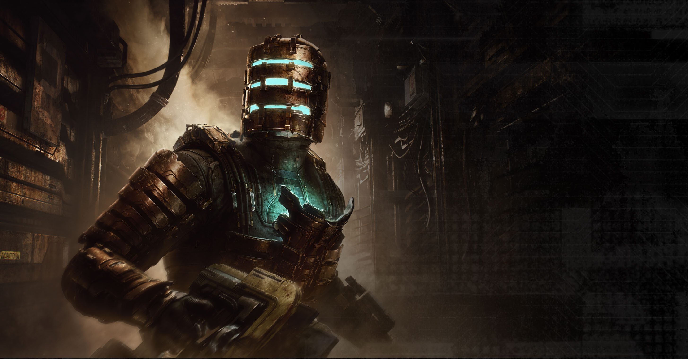Arts, o remake de Dead Space entregou uma versão aprimorada que acerta em cheio ao preservar a experiência original e expandir suas qualidades ao mesmo tempo.
Confira a nossa review do remake de Dead Space
A nova versão expandida do jogo de 2008 apresentou uma jogabilidade repaginada, gráficos modernizados e até áudio atualizado, alegrando o coração dos fãs de terror.
Data de lançamento: já disponível
Plataformas: PlayStation 5, Xbox Series X|S, PC
Resident Evil 4
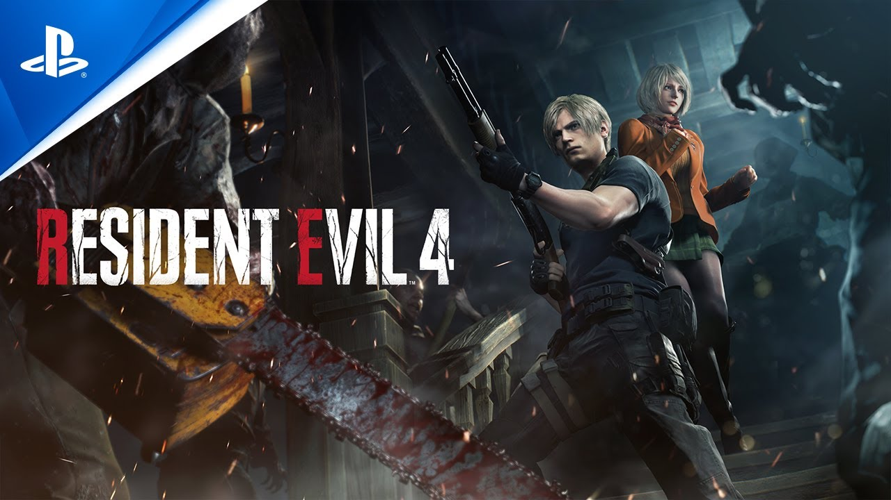Após quase 20 anos, o clássico do survival horror está de volta! O remake de Resident Evil 4 chegou em março de 2023 e agradou (e muito) a crítica especializada e os fãs.
Confira a nossa review de Resident Evil 4
Desenvolvido com o motor gráfico RE Engine, o jogo é uma recriação fiel ao original, apresentando gráficos e jogabilidade atualizados para deixar a experiência mais moderna, mas sem perder a essência.
Data de lançamento: já disponível Plataformas: PlayStation 4, PlayStation 5, Xbox Series X|S, PC
Hi-Fi Rush
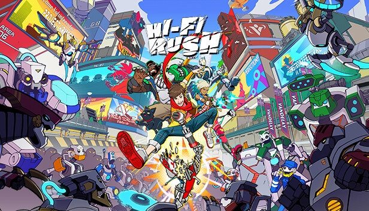De surpresa, a Tango Gameworks lançou Hi-Fi Rush, jogo que mistura ação e ritmo, no finalzinho de janeiro — e que já se tornou um dos mais aclamados do ano.
Confira a nossa review de Hi-Fi Rush
O game conquistou muitos jogadores pelo gameplay frenético, visual colorido, personagens memoráveis e humor bem equilibrado entre o pastelão e o culto.
Data de lançamento: já disponível
Plataformas: Xbox Series X|S, PC
Hogwarts Legacy

Hogwarts Legacy é um RPG que se passa no universo de Harry Potter (antes dos livros) e coloca o jogador como um estudante de Hogwarts, contando com aulas de magia, embates entre as Casas e lutas com varinha.
Data de lançamento: já disponível
Plataformas: PlayStation 4, PlayStation 5, Xbox One, Xbox Series X|S, PC
Dead Island 2
Ninguém acreditava, mas 2023 teve Dead Island 2! Após oito anos em desenvolvimento e várias trocas de estúdio, o jogo finalmente chegou com humor ácido e muita pancadaria contra mortos-vivos.
Confira a nossa review de Dead Island 2
A sequência não deixou os problemas de bastidores afetarem o resultado final, apresentando um RPG de ação bem-humorado, competente e banhado em sangue de zumbis.
Data de lançamento: já disponível Plataformas: PlayStation 4, PlayStation 5, Xbox One, Xbox Series X|S, PC
Star Wars Jedi: Survivor
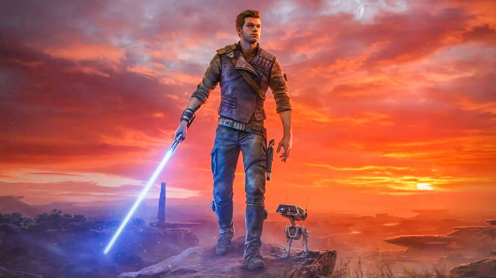Sequência direta do aclamado Jedi: Fallen Order, Star Wars Jedi: Survivor retoma a fórmula de mundo aberto e o protagonista Cal Kestis, que agora é um Jedi e precisa lutar contra as forças do Império das sombras.
Confira a nossa review de Star Wars Jedi: Survivor
O jogo apresentou uma aventura divertida, empolgante e com toda a essência de uma história Star Wars, mas deixou a desejar em termos de performance, com alguns problemas de desempenho no lançamento.
Data de lançamento: já disponível
Plataformas: PlayStation 5, Xbox Series X|S, PC
Redfall
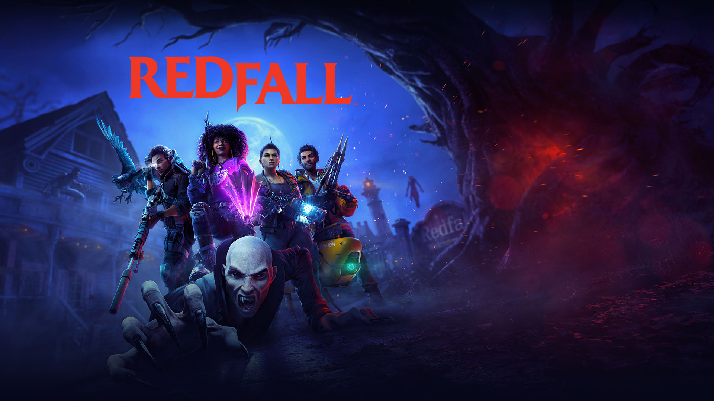Redfall é o novo FPS do estúdio Arkane, conhecido por Deathloop, Prey e Dishonored, com estrutura de mundo aberto e elementos multiplayer.
Confira a nossa review de Redfall
O jogo de tiro, no entanto, teve um lançamento conturbado e não atendeu as expectativas dos jogadores.
Data de lançamento: já disponível
Plataformas: Xbox Series X|S, PC
Zelda: Tears of the Kingdom

Um dos jogos mais esperados de 2023, Zelda: Tears of the Kingdom é a sequência direta do aclamado Breath of the Wild.
Confira a nossa review de Zelda: Tears of the Kingdom
O jogo é um mergulho em queda livre no conceito de liberdade e na clássica lenda da franquia, expandindo a essência de seu antecessor.
Data de lançamento: já disponível
Plataformas: Nintendo Switch
The Lord of the Rings: Gollum
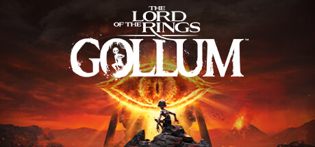Uma das surpresas — porém, negativas — do ano foi The Lord of the Rings: Gollum, game baseado no universo de O Senhor dos Anéis que tem Gollum como protagonista.
Confira a nossa review de The Lord of the Rings: Gollum
O jogo prometia uma mescla de aventura e furtividade, mas decepcionou os jogadores pela história e gameplay, que deixaram a desejar, além de apresentar vários problemas gráficos e de performance.
Data de lançamento: já disponível
Plataformas: PlayStation 4, PlayStation 5, Xbox One, Xbox Series X|S, PC
Street Fighter 6
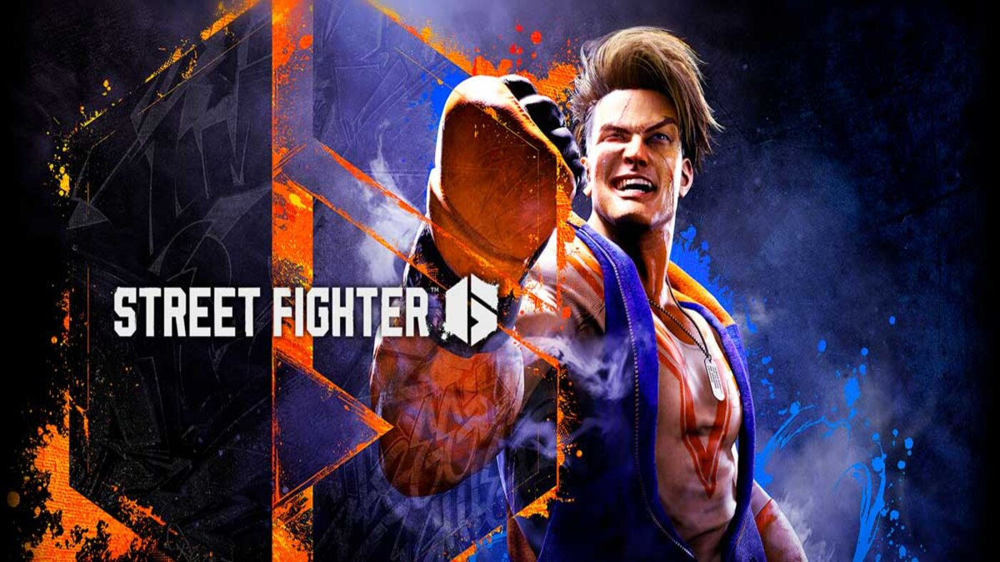A Capcom não estava brincando, e a porradaria clássica voltou com tudo em Street Fighter 6.
Confira a nossa review de Street Fighter 6
O game arrancou elogios da crítica especializada e dos fãs pelos modos variados de jogo, estética colorida, exploração livre em terceira pessoa, recursos de acessibilidade e jogabilidade viciante.
Data de lançamento: já disponível
Plataformas: PlayStation 4, PlayStation 5, Xbox Series X|S, PC
Diablo IV
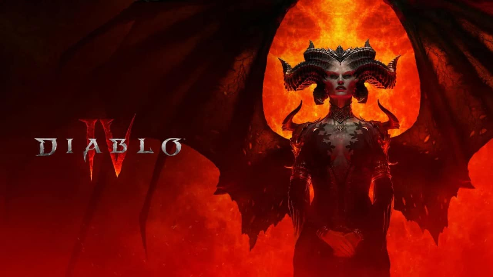Diablo IV marca o tão esperado retorno da franquia 11 anos após o terceiro lançamento da série principal.
Confira a nossa review de Diablo IV
Com uma jogabilidade diabolicamente viciante, o jogo apresenta um mundo gigantesco e repleto de histórias sombrias e cativantes, árvore de habilidades robusta e muito conteúdo endgame.
Data de lançamento: já disponível
Plataformas: PlayStation 4, PlayStation 5, Xbox One, Xbox Series X|S, PC
Final Fantasy XVI
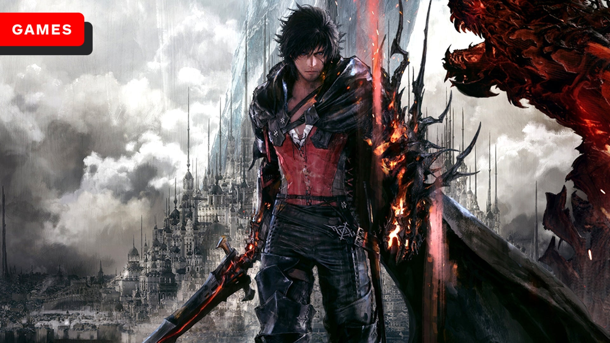Ifrit finalmente veio a nós com Final Fantasy XVI!
Confira a nossa review de Final Fantasy XVI
O 16º jogo da linha numerada de Final Fantasy é um RPG de ação com uma história trágica, combate com muitas possibilidades e um mundo repleto de magia. A recepção, em sua maior parte, foi positiva, tanto pela crítica especializada quanto pelos fãs.
Data de lançamento: já disponível
Plataformas: PlayStation 5
Starfield
Descrito como um “Skyrim no espaço” pela Bethesda, Starfield é o próximo RPG no espaço sideral, que apresentará um universo inédito e terá mais de mil planetas para explorar.
Data de lançamento: 6 de setembro
Plataformas: Xbox Series X|S, PC
Mortal Kombat 1

Parece que 2023 é um bom ano para ser fã de jogos de luta. Mortal Kombat 1 promete um “universo renascido” para a franquia e tem, como principal novidade, o sistema de “Kameo Fighters”, que consiste na ideia de fazer combos com um segundo lutador parcialmente controlável.
Data de lançamento: 19 de setembro
Plataformas: PC, PlayStation 5, Xbox Series X|S e Nintendo Switch
Lies of P
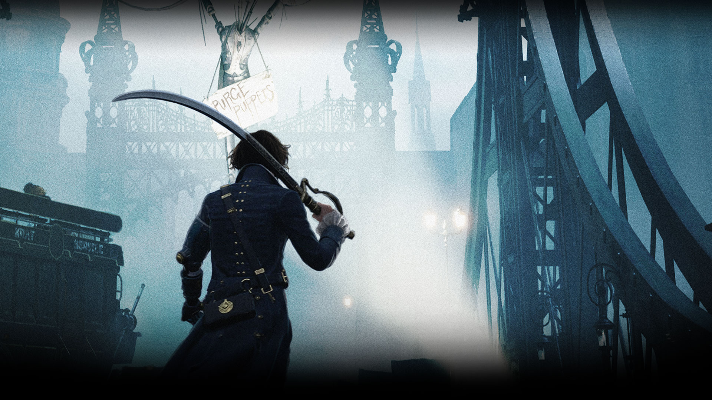Lies of P é um RPG de ação ao estilo soulslike, que se inspira no clássico Pinóquio, mas apresenta estética gótica da Era Vitoriana, jogabilidade desafiadora e muitas lutas contra chefões.
Data de lançamento: 19 de setembro
Plataformas: PlayStation 4, PlayStation 5, Xbox One, Xbox Series X|S, PC
Assassin’s Creed Mirage
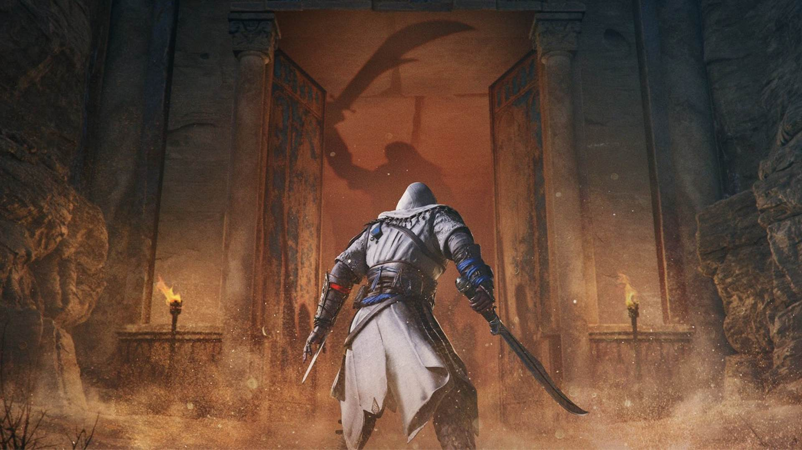Assassin’s Creed retorna em 2023 com Mirage, novo jogo da linha principal da franquia, que manterá os moldes de RPG de Odyssey e Valhalla. O game será ambientado em Bagdá e terá Basim como protagonista.
Data de lançamento: 12 de outubro
Plataformas: PlayStation 4, PlayStation 5, Xbox One, Xbox Series X|S, PC
Alan Wake II
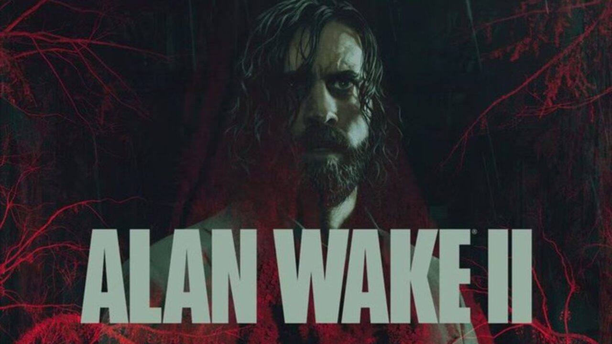Após 10 anos, Alan Wake estará de volta com um novo jogo. A sequência será o primeiro projeto voltado para survival horror do estúdio Remedy, com um foco maior em narrativa e terror psicológico.
Data de lançamento: 17 de outubro
Plataformas: PlayStation 5, Xbox Series X|S, PC
Super Mario Bros. Wonder
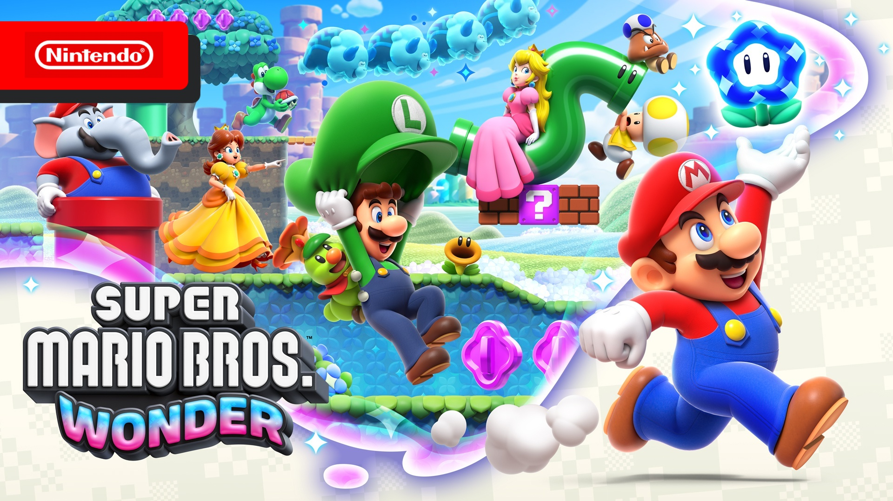A aventura clássica do encanador bigodudo retorna em 2023! Super Mario Bros. Wonder é um novo jogo de plataforma da franquia, que terá gráficos ao estilo 2.5D, modo co-op para até quatro jogadores e poderes especiais para os personagens jogáveis (Mario, Luigi, Peach e Daisy)
.Data de lançamento: 20 de outubro
Plataformas: Nintendo Switch
Super Mario RPG

Super Mario RPG é um remake do clássico RPG de Super Nintendo, originalmente lançado em 1996. A nova versão promete modernizar o jogo, que apresenta uma história inusitada no Reino dos Cogumelos (com Bowser se unindo ao grupo de Mario), com gráficos totalmente repaginados.
Data de lançamento: 17 de novembro
Plataformas: Nintendo Switch
Marvel’s Spider-Man 2

Marvel’s Spider-Man 2 é a sequência do aclamado jogo da Insomniac Games, que terá Peter Parker e Miles Morales lutando juntos contra um vilão icônico do Teioso: ninguém menos do que Venom!
Data de lançamento: entre setembro e novembro de 2023
Plataformas: PlayStation 5
Mais lançamentos
Mas não para por aí! Também separamos uma breve listinha de menções honrosas, com outros jogos de 2023 que merecem atenção.
Veja abaixo:
One Piece Odyssey — já disponível
Vengeful Guardian: Moonrider — já disponível
Forspoken — já disponível
Metroid Prime Remastered — já disponível
Kirby’s Return to Dream Land Deluxe — já disponível
Blanc — já disponível
Like a Dragon: Ishin — já disponível
Minecraft Legends — já disponível
I Did Not Buy This Ticket — já disponível
Paranormasight: The Seven Mysteries of Honjo — já disponível
Tchia — já disponível
Bayonetta Origins: Cereza and the Lost Demon — já disponível
Deliver Us Mars — já disponível
Atomic Heart — já disponível
Wild Hearts — já disponível
9 Years of Shadows — já disponível
Kerbal Space Program 2 — já disponível
Have a Nice Death — já disponível
Wo Long: Fallen Dynasty — já disponível
Honkai: Star Rail — já disponível
Final Fantasy Pixel Remaster — já disponível
The Mageseeker: Uma História de League of Legends — já disponível
Bramble: The Mountain King — já disponível
CONV/RGENCE: Uma História de League of Legends — já disponível
Decarnation — já disponível
Layers of Fear — já disponível
Oxenfree II: Lost Signals — 12 de julho
Pikmin 4 – 21 de julho
Remnant 2 — 25 de julho
The Expanse: A Telltale Series — 27 de julho
Disney Illusion Island — 28 de julho
Immortals of Aveum — 2 de agosto
The Texas Chain Saw Massacre — 18 de agosto
Blasphemous 2 — 24 de agosto
Armored Core VI: Fires of Rubicon — 25 de agosto
Sea of Stars — 29 de agosto
Under the Waves — 29 de agosto
Baldur’s Gate 3 — 31 de agosto
PAYDAY 3 — 21 de setembro
Detective Pikachu Returns — 6 de outubro
Forza Motorsport — 10 de outubro
Alone in the Dark — 25 de outubro
WarioWare: Move It! — 3 de novembro
The Day Before — 10 de novembro
Persona 5 Tactica — 17 de novembro
S.T.A.L.K.E.R. 2 — dezembro
Sonic Superstars — ainda sem data
Ghostrunner 2 — ainda sem data
The Plucky Squire — ainda sem data
Vampire: The Masquerade – Bloodlines 2 — ainda sem data
Pragmata — ainda sem data
Slitterhead — ainda sem data (entre 2023 e 2024)
Skull & Bones — ainda sem data (entre 2023 e 2024)
https://htmlpreview.github.io/?https://github.com/rodrigoxal/ProfXavierWeb/blob/main/index.html